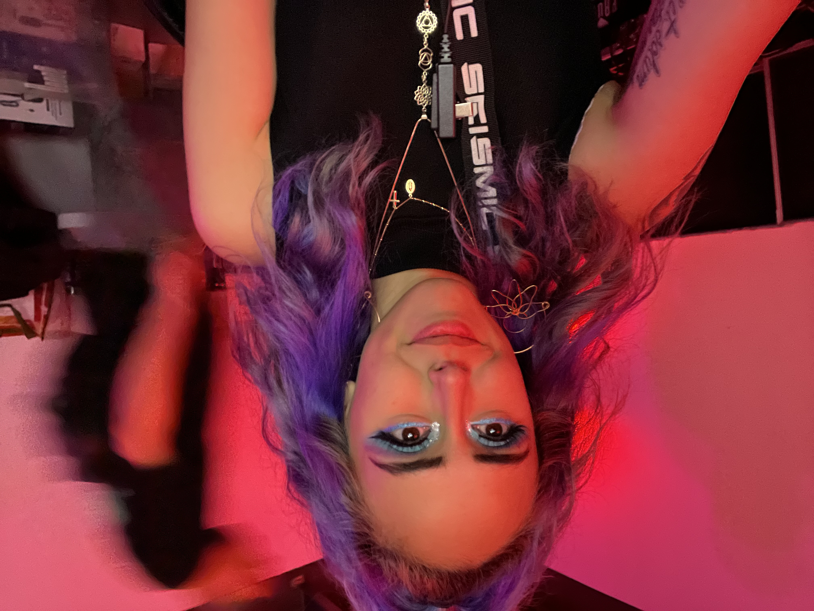
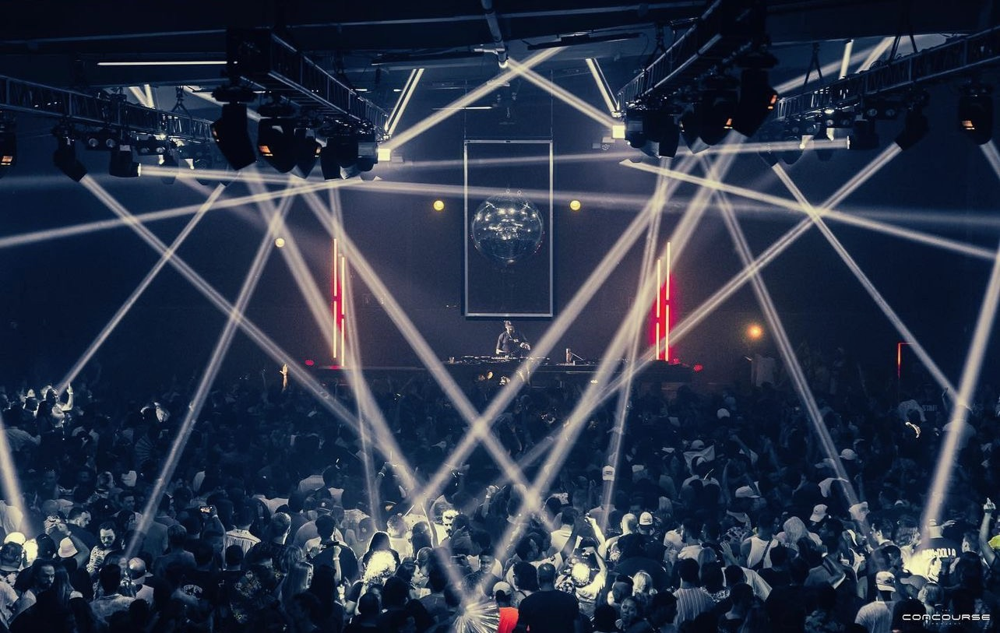
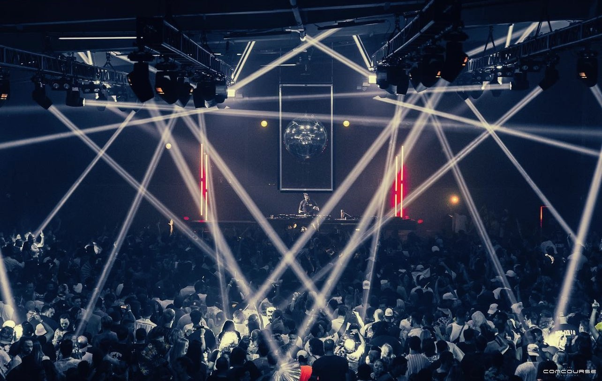

Get to Know Me
About Me
I have recently begun my journey in becoming a software developer.
I have had a great time learning the computer language. So far HTML/CSS has been my favorite lesson.
I enjoy things that allow me to express my creativity which is why I find HTML/CSS so fun & exciting.
I am mother to an adventurous & energetic 7 year old boy.
When I am not doing school work or spending time with my son, I am working at a music venue.
I am the VIP Manager & Artist Hospitality Liason at an electronic music venue in Austin, TX.
Likes & Hobbies:
- I enjoy dancing in my free time.
- I love House & Techno music.
- I enjoy cooking.
- My son & I love being outdoors.
My goals in order from short-term to long-term:
- Continue my thinkful course to further my education in the tech industry.
- Use the knowledge & skills I have learned over this course to apply & land a job in the industry.
- After a few years of experience & further knowledge growth in the industry, I'd like to partner up with music festivals to develop apps for their patrons.
Gallery
 

Contact Info
I am currently located in Austin, TX. However, I am open to relocate for any/all career opportunities.
You can reach me via LinkedIn message or send me a direct email using the attached links below.